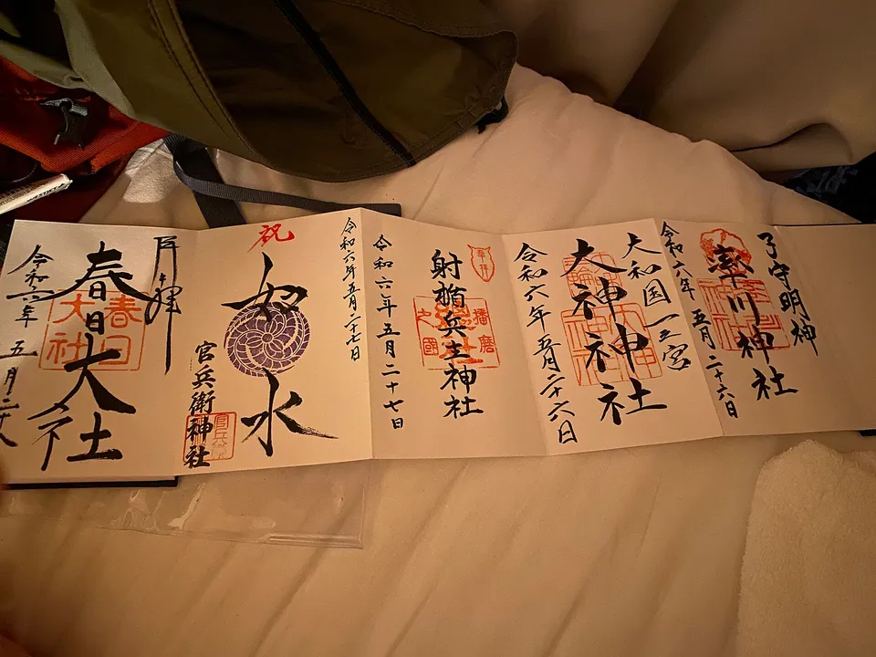

切り絵御朱印：日本的剪紙寺廟印章
一般的御朱印（goshuin）是在您等待時，以墨水和朱紅色筆刷寫入御朱印帳的印記。切り絵御朱印（kirie goshuin）則截然不同：一張紙被精確地鏤空成楓葉、龍或寺廟屋頂的格狀圖案，透過鏤空處可見背後的色彩。這是日本印章收集愛好中成長最快的領域，幾乎都以散頁形式發放而非蓋入御朱印帳，且熱門設計往往迅速售罄。本指南將介紹切り絵御朱印的定義、哪些寺廟與神社已在官方網站確認提供、實際費用，以及容易讓訪客踩雷的規則。

切り絵御朱印究竟是什麼
切り絵（kirie）是剪紙藝術——透過去除紙張而非添加墨水來呈現圖像。切り絵御朱印將這種技法應用於寺廟印章：神社或寺廟的名稱與印鑑位於一張紙上，周圍的圖案被完全鏤空，通常以金色、彩色或純白色的第二張紙作為底襯，使圖案清晰可見。對著窗戶舉起，光線便會透過鏤空處穿透而過。
同一名稱下有兩種製作方式，值得加以區分。熱潮中的大多數作品採用雷射切割：設計完成後批量切割，以限量季節性版本發行。另有少數傳統採用手工切割。愛知縣豐橋市的普門寺（普門寺）在其官方網站上說明，印章紙張全由前住持親手剪裁，文字逐張書寫，以高野山展示的蓬萊吉祥剪紙為藍本，並自2016年起開始發行。
兩種製作方式在實際操作上的結果相同。由於剪裁完成的紙張無法當場書寫，切り絵御朱印幾乎都以書き置き（kakioki）形式發放——預先製作好，以散頁交給您，帶回家後自行裝裱。您不需要將御朱印帳交給工作人員。
這些是限量發行品，並非常備庫存。寺廟明確說明不接受預約或保留，也不補發：宝徳寺的御朱印頁面表示，不接受預約或代為保留，不透過電話或電子郵件回覆御朱印相關詢問，且限定設計不在指定期間外發行。若您想要的設計已售罄，便無緣取得。
熱潮的起源
目前沒有中立的機構記錄誰製作了第一張切り絵御朱印。現存的文字記載是一份自述：埼玉縣熊谷市的龍泉寺——更廣為人知的名稱是「埼玉厄除け開運大師」——在其官方網站上自稱為「切り絵御朱印發祥の寺」（切り絵御朱印的發源寺廟）。這應視為寺廟本身的說法，而非經過確認的事實，因為沒有任何獨立機構對此進行認證。無可爭議的是，這種形式在2020年前後迅速普及，如今已從青森延伸至福岡。
最有趣的案例不是單一寺廟，而是一整個小鎮。埼玉縣秩父地區的橫瀬町，由當地觀光協會統籌，在秩父巡禮路線上的八座寺廟加上一座神社——共九處——各自推出專屬的切り絵御朱印設計，形成一條可步行完成的巡禮路線。這將單一紀念品轉化為在地巡遊體驗，正是日本其他收集活動（如下水道蓋卡和道之驛印章集章）背後的運作機制。
取得地點：已確認的寺廟與神社
以下所有條目均已對照寺廟或神社的官方網站，或當地官方觀光網站進行核實。價格僅在網站有明確標示的情況下列出——許多寺廟刻意不公布金額，因為這筆費用被視為奉納而非購買。
| 地點 | 所在地 | 提供內容 | 公告價格 | 可郵購？ |
|---|---|---|---|---|
| 龍泉寺龍泉寺・埼玉厄除け開運大師 | 埼玉縣熊谷市 | 每三個月更換的季節性切り絵，另有疊層版及直書版。週一及週三至週日開放，9:30–16:00（週二休） | 未公告 | 是 |
| 宝徳寺宝徳寺 | 群馬縣桐生市 | 每月更換的地藏與季節花卉設計，另有全年供應的風神雷神、韋駄天及烏樞沙摩明王金底版 | 未公告 | 是——每人最多3張 |
| 高幡不動尊金剛寺高幡不動尊金剛寺 | 東京都日野市 | 限量季節性切り絵；寺廟明確要求不得轉售 | ¥1,000 | 未說明 |
| 仁和寺仁和寺 | 京都（UNESCO世界遺產） | 御殿庭園辦公室提供夏季「仁和寺納涼」設計，9:00–17:00；金堂辦公室提供令和8年阿彌陀如來設計，9:00–16:30 | 各¥1,500 | 未說明 |
| 田無神社田無神社 | 東京都西東京市 | 由在地剪紙藝術家小出周製作的五龍設計，有單色與彩色兩種版本 | ¥1,500 | 未說明 |
| 橫瀬町巡禮路線横瀬町の9寺社 | 埼玉縣秩父地區 | 九處各有一款設計——長光寺、墨雲寺、法長寺、最善寺、妙智寺、大慈寺、東林寺、大中院及富士浅間神社。全年供應，8:00–17:00（3月至10月），12:00–12:30休息 | ¥1,000–1,500 | 否 |
| 日光山輪王寺日光山輪王寺 | 栃木縣日光市（UNESCO世界遺產） | 大護摩堂切り絵御朱印，目前為鯉魚與堂宇設計；季節版本定期更換 | ¥1,500 | 未說明 |
| 普門寺普門寺 | 愛知縣豐橋市 | 手工剪裁，非雷射切割。自2016年起發行，以高野山蓬萊剪紙為藍本；費用用於修復寺廟重要文化財佛像 | 奉納，未公告 | 是 |
其中兩處可輕鬆融入原有行程。仁和寺是京都西北部的世界遺產寺廟，大多數初次造訪的旅客早已列入計畫。輪王寺位於日光神社群內，是從東京出發的標準一日遊目的地——而且日光高原的楓葉在10月中旬便已轉紅，比京都早上數週。
容易讓訪客踩雷的五項規則
1. 不會蓋入您的御朱印帳。剪裁完成的散頁直接交給您。請攜帶可平放保存的容器；部分寺廟有販售專用收納夾。這是只收集過一般御朱印的訪客最常遇到的落差。
2. 先參拜，再領取。御朱印是參拜的證明。神社本廳（日本全國神社的統籌機構）說明，御朱印是作為在寺廟繳交抄寫經文收據的傳統演變而來，是參拜後領取的憑證。請先前往正殿參拜，再前往受付窗口。
3. 受付窗口關閉時間遠早於境內關閉時間。上表中的受付窗口營業至16:00或17:00，即使境內本身開放至更晚。宝徳寺的御朱印受付時間為9:00至16:00。請將領取御朱印安排在觀光行程之前，而非之後。
4. 數量限制與禁止轉售的要求是認真的。宝徳寺的郵購每人上限為3張。高幡不動尊要求購買者不得轉售。這些規定明確標示於寺廟官方頁面，因為轉售至拍賣網站的問題已相當嚴重。
5. 郵購可行性因地而異。龍泉寺、宝徳寺和普門寺提供郵購服務。橫瀬町的九處寺社則明確表示不提供郵購。請勿因某處寺廟提供郵購便假設其他寺廟也會。
從基礎開始——御朱印是什麼及相關禮儀 →——再了解如何挑選御朱印帳 →。城堡也有專屬的付費版本，稱為御城印 →。
費用與保存方式
在有公告價格的情況下，範圍相當集中：高幡不動尊¥1,000、橫瀬町巡禮路線¥1,000–1,500、仁和寺¥1,500、田無神社¥1,500、輪王寺¥1,500。這大約是一般御朱印（通常為¥300–500）的兩到三倍。作為參考，香嵐渓的香積寺公告標準設計¥500、大型設計¥1,000，可作為「一般」費用的基準。


照片：御朱印帳——切り絵御朱印通常以散頁形式發放，與御朱印帳一同保存 — Immanuelle，CC BY 4.0，經由 Wikimedia Commons · 束口袋可保護御朱印帳及散頁 — Haziq Faruqi，CC BY-SA 4.0，經由 Wikimedia Commons
保存方式是最常被忽略的環節。剪裁完成的散頁在圖案的細小橋接處十分脆弱，若黏入折疊式御朱印帳，會壓壞立體感並遮蓋底色。常見的解決方案是使用專為散頁御朱印設計的透明口袋相冊，或專用收納夾——輪王寺曾發行附贈專用收納夾的季節性切り絵，費用已包含在內。請在開始收集前先購買相冊，而非等到第一張散頁在背包裡折損之後。
實際會用到的日文
在受付窗口的對話很簡短，但以下是告示牌上會出現的詞彙。
| 日文 | 讀音 | 意思 |
|---|---|---|
| 切り絵御朱印 | kirie goshuin | 剪紙御朱印 |
| 書き置き | kakioki | 預先書寫的散頁——切り絵幾乎都以此形式發放 |
| 直書き | jikagaki | 直接書寫於御朱印帳（切り絵不適用） |
| 限定 | gentei | 限定——指期間、季節或張數的限制 |
| 初穂料 / 納経料 | hatsuhoryō / nōkyōryō | 奉納金——分別為神社與寺廟的用語 |
| 授与所 / 納経所 | juyosho / nōkyōsho | 領取御朱印的窗口 |
| 郵送 | yūsō | 郵購發行 |
| なくなり次第終了 | nakunari shidai shūryō | 「售完為止」 |
| お一人様〇枚まで | ohitorisama ~mai made | 「每人限購N張」 |
想記住這些詞彙？免費JLPT對戰測驗以間隔重複法訓練旅遊與文化相關詞彙。
剪紙印章與日本其他地點限定的收集活動相輔相成：下水道蓋卡 →、鐵路車站印章 →、更廣泛的公共設施集卡類型 →，以及秋季限定御朱印 →。一月的收集活動則聚焦於單一路線——七福神巡禮 →。
常見問題
Q. 切り絵御朱印是什麼？
A. 一種發行於鏤空剪紙上的御朱印——楓葉、龍、寺廟建築等圖案被切穿，使彩色底紙透過鏤空處顯現。大多數採雷射切割，以限量季節性版本發行；少數（如愛知縣豐橋市的普門寺）為手工剪裁。
Q. 可以蓋入御朱印帳嗎？
A. 一般不行。由於紙張已剪裁完成，以散頁（書き置き）形式發放。請保存於透明口袋相冊或專用收納夾，而非黏入折疊式御朱印帳。
Q. 費用是多少？
A. 有公告價格的寺廟通常為¥1,000–1,500——例如東京高幡不動尊¥1,000、京都仁和寺¥1,500。許多寺廟不公告價格，因為這筆費用被視為奉納。
Q. 初次造訪的旅客在哪裡最容易取得？
A. 京都的仁和寺和日光的輪王寺都是世界遺產，已在大多數行程中，且均在官方網站確認提供切り絵御朱印。在東京，日野市的高幡不動尊和西東京市的田無神社都位於一般通勤路線上。
Q. 可以從海外郵購嗎？
A. 部分寺廟提供日本境內郵購——龍泉寺、宝徳寺和普門寺均表示可以——但相關說明是針對日本國內地址和付款方式撰寫的，且有數處明確表示不提供郵購。除非寺廟官方頁面另有說明，否則請假設需要親自前往。
Q. 為什麼設計這麼快就售罄？
A. 這些設計以固定數量發行，與特定月份或季節綁定，且寺廟明確表示不接受預約、保留或補發。一旦售罄，該設計便不再重製，這也是轉售問題出現的原因，也是寺廟現在要求購買者不得轉售的緣由。
Q. 哪個地方集中了最多切り絵御朱印？
A. 埼玉縣秩父地區的橫瀬町，由當地觀光協會統籌，九座寺廟與神社各自全年發行專屬設計，是目前記錄在案密度最高的步行巡禮路線。
切り絵御朱印與手工竹製器具有著相同的美學品味。請參閱我們的抹茶與茶道器具比較 →，了解值得入手的茶筅、茶杓與茶碗組合——以及大多數人容易忘記的那件配件。